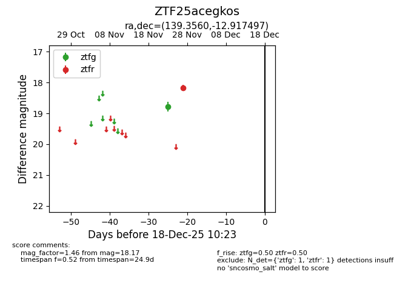
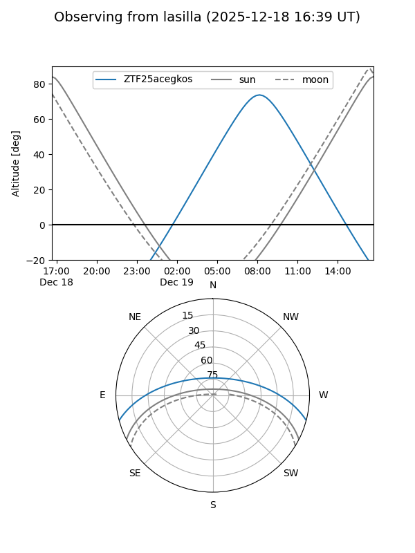
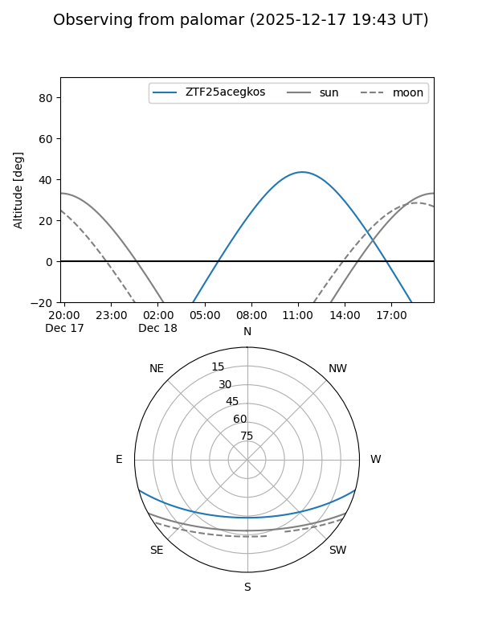

ZTF25acegkos
Target ZTF25acegkos at 2025-12-18 11:17
Aliases and brokers:
FINK: fink-portal.org/ZTF25acegkos
Lasair: lasair-ztf.lsst.ac.uk/objects/ZTF25acegkos
ALeRCE: alerce.online/object/ZTF25acegkos
alt names
ZTF25acegkos (ztf,fink_ztf)
Coordinates:
equatorial (ra, dec) = 139.3560,-12.91750
equatorial (HMS+DMS) = 09:17:25.45,-12:55:02.99
galactic (l, b) = (243.5270,+24.45710)
Photometry
last ztfg=18.78, ztfr=18.17
1 ztfg, 1 ztfr detections
Lightcurve

Visibility


Additional plots